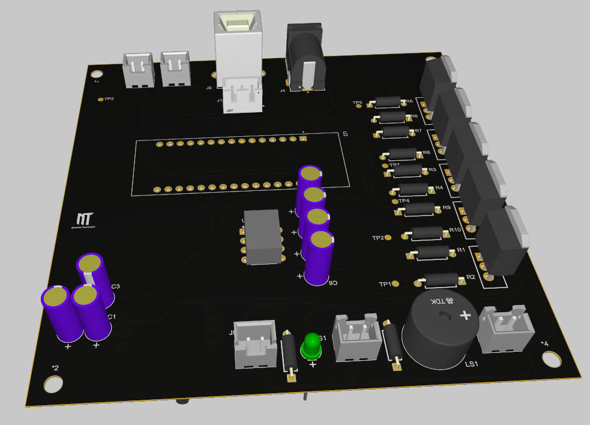

STM32-based oscillometric BP measurement system with custom single-layer PCB. Complete hardware + firmware solution for cuff inflation, pressure sensing, and vital sign computation.

Single-layer PCB designed for in-house fabrication
MP3V5050GP - Absolute pressure sensor (0-50 kPa). Connected to ADC Channel 6 via DMA for high-speed sampling.
5x IRF540 MOSFETs controlled via PA4-PA6 & PB3:
• Pump (Inflation)
• Valve 1 & 2 (Controlled deflation)
• Buzzer & LED indicators
USB/DC 5V input with TC4420 MOSFET driver for reliable pump/valve control.
1. Inflate cuff to ~180 mmHg
2. Controlled linear deflation
3. Detect pressure oscillations
4. Envelope analysis for SBP/DBP
• Bandpass filtering of AC component
• Peak detection on oscillation amplitude
• Empirical ratios for systolic/diastolic